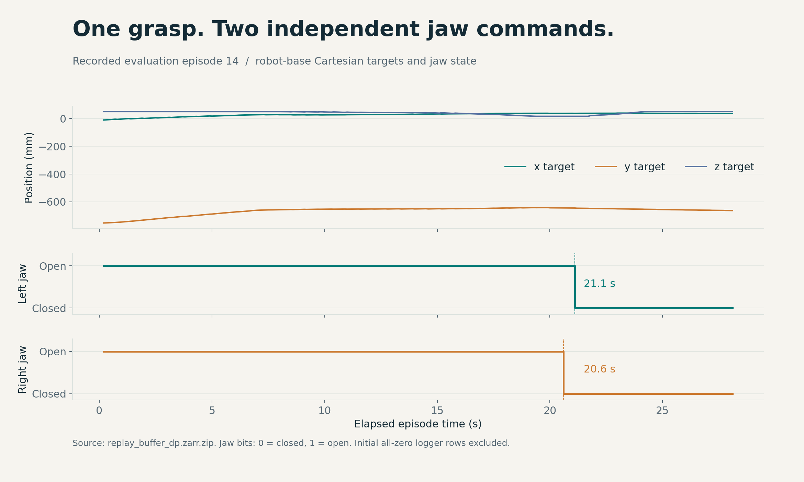
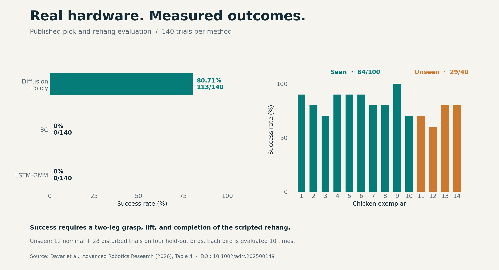
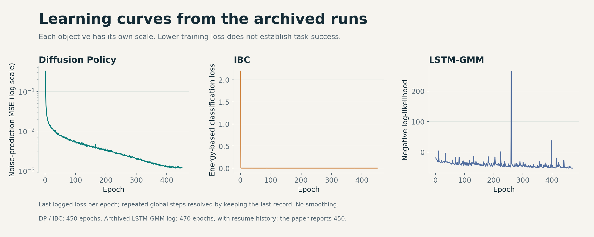

ROBOT LEARNING × CUSTOM HARDWARE
Learning to handle
the irregular.
ChicGrasp combines a custom dual-jaw gripper with a diffusion policy to grasp delicate, variable poultry carcasses.
Scripted transfer to the shackle.
113 / 140 successful trials
teleoperated demonstrations
task commands: XYZ + two jaws
reported total cycle time, approx.
Study figures from Davar et al. (2026). Success includes grasp, lift, and scripted rehang. Prototype evaluation on individually presented carcasses.
THE PROJECT IN 84 SECONDS
From a physical problem
to a learned behavior.
Hardware, real model denoising, measured results, and a short look at the ongoing simulation work.
01 / THE SYSTEM
Two jaws.
One coordinated policy.
The task requires more than a single close command. Each leg can arrive at a different position, so the gripper’s two jaw groups operate independently.

My contribution
I led the project from mechanical design through experimental evaluation.
- Mechanical designCustom gripper geometry, fabrication, and robot attachment.
- Robot learningMultiview demonstration collection, dataset integration, diffusion-policy training, and baseline comparisons.
- Real-world controlUR10e integration, Arduino jaw control, logging, replay, and hardware evaluation.
The publication credits the full research team; individual technical scope is stated by the author.
View CAD orbit ↗
Five task commands, eight stored values
The paper describes [x, y, z, left_jaw, right_jaw]. The archived code and checkpoint store [x, y, z, rx, ry, rz, left_jaw, right_jaw], retaining three orientation values. Jaw convention: 0 = closed, 1 = open. The encoder in the supplied checkpoint uses three RGB views, end-effector pose, and the two jaw states.
02 / INSIDE THE DIFFUSION POLICY
Watch an action
take shape.
Start with a noisy sequence. Refine it using the observed scene. Decode robot targets and jaw commands. These are actual intermediate outputs from the supplied checkpoint.


16 predicted steps
2 observation steps
EMA checkpoint · seed 42 · 100 DDIM steps. New offline predictions on recorded inputs; these plans were not executed on the robot. Video and state alignment is approximate.
03 / COMMANDS IN A RECORDED GRASP
Independent timing,
visible in the log.
In evaluation episode 14, the recorded right-jaw command switches to closed at 20.6 seconds. The left follows at 21.1 seconds.
RECORDED COMMANDS
The displayed bits are recorded commands, not contact or force measurements. Video alignment uses elapsed time.

04 / PUBLISHED RESULTS
Measured on
real hardware.
Ten evaluation trials on each of fourteen carcasses. Ten birds appeared in the demonstration collection; four were held out and tested in nominal and disturbed conditions.
| Method | Seen | Unseen | Overall |
|---|---|---|---|
| Diffusion Policy | 84 / 100 84.0% | 29 / 40 72.5% | 113 / 140 80.71% |
| IBC | 0 / 100 | 0 / 40 | 0 / 140 |
| LSTM-GMM | 0 / 100 | 0 / 40 | 0 / 140 |

What the results establish
The study demonstrates learned grasping with a custom gripper in a laboratory prototype. Rehanging follows a fixed script. The reported cycle is approximately 38 seconds, and the current result does not establish production-line throughput or fully learned rehanging.
Training curves and source-data coverage

Loss values describe different training objectives and should not be ranked across methods. The archived LSTM-GMM log includes 470 epochs and resume history; the paper reports 450 epochs. See the source audit, table discrepancy, and reproducibility notes.
05 / SEPARATE ONGOING WORK
Extending the work
in Isaac Lab.
A simulation workbench brings the UR10e, custom gripper, articulated chicken anatomy, and shackle into one scene for contact and manipulation experiments.
Cinematic view of the held practice configuration. A repeatable released two-hock hang is not yet verified. This footage is separate from the published hardware benchmark.
EXPLORE THE WORK
Code. Hardware. Evidence.
Amirreza Davar, Zhengtong Xu, Siavash Mahmoudi, Pouya Sohrabipour, Chaitanya Pallerla, Yu She, Wan Shou, Philip Glen Crandall, and Dongyi Wang.
ChicGrasp, Advanced Robotics Research (2026). Built on Diffusion Policy by Chi et al.